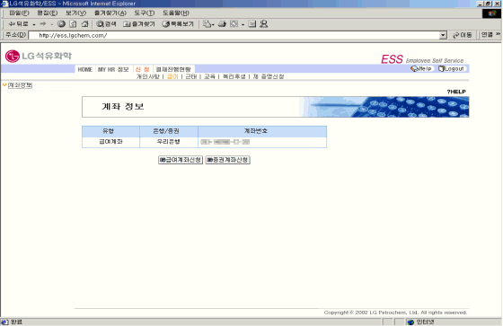
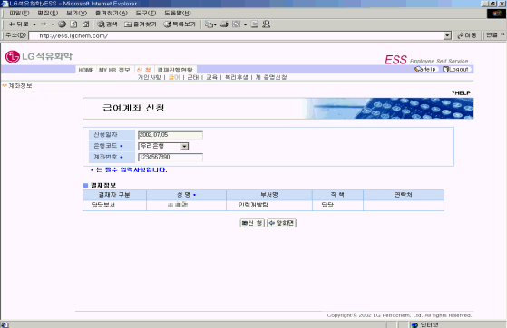
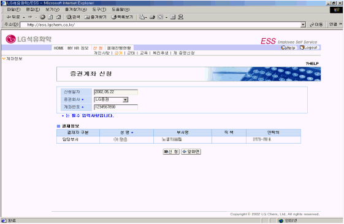

| Ⅱ. 화면사용법 및 유의사항 |
| <그림 1. 계좌정보 조회 화면> |
|  |
| |
| 1) 급여계좌와 증권계좌를 조회하고, 각 신청 버튼을 클릭하여 계좌에 대해 변경 신청한다. |
| |
| <그림 2. 급여계좌 신청 화면> |
|  |
| |
| 1) 변경할 급여계좌의 은행과 계좌번호를 입력하고 신청한다. |
| 2) 변경할 계좌의 사본을 인사부서로 송부한다. |
| 3) 인사담당자가 사본을 확인하고 결재를 하면 계좌가 변경된다. |
| 4) 변경된 계좌 내용은 ESS의 동 화면에서 확인한다. |
| |
| <그림 3. 증권계좌 신청 화면> |
|  |
| |
| 1) 변경할 증권계좌의 증권회사와 계좌번호를 입력하고 신청한다. |
| 2) 변경할 계좌의 사본을 인사부서로 송부한다. |
| 3) 인사담당자가 사본을 확인하고 결재를 하면 계좌가 변경된다. |
| 4) 변경된 계좌 내용은 ESS의 동 화면에서 확인한다. |